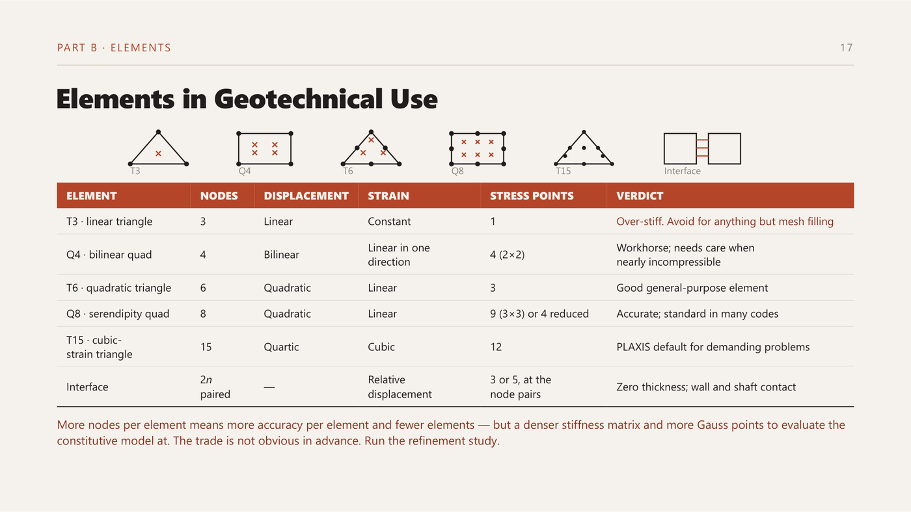
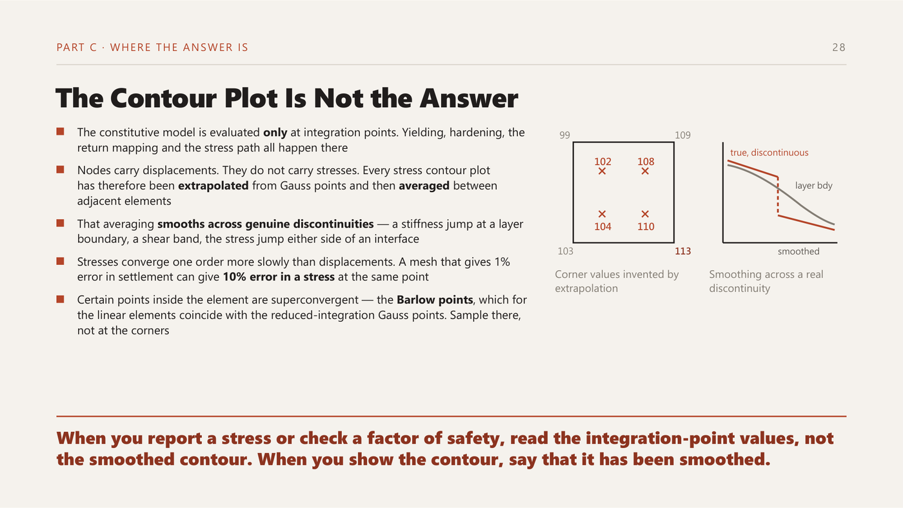
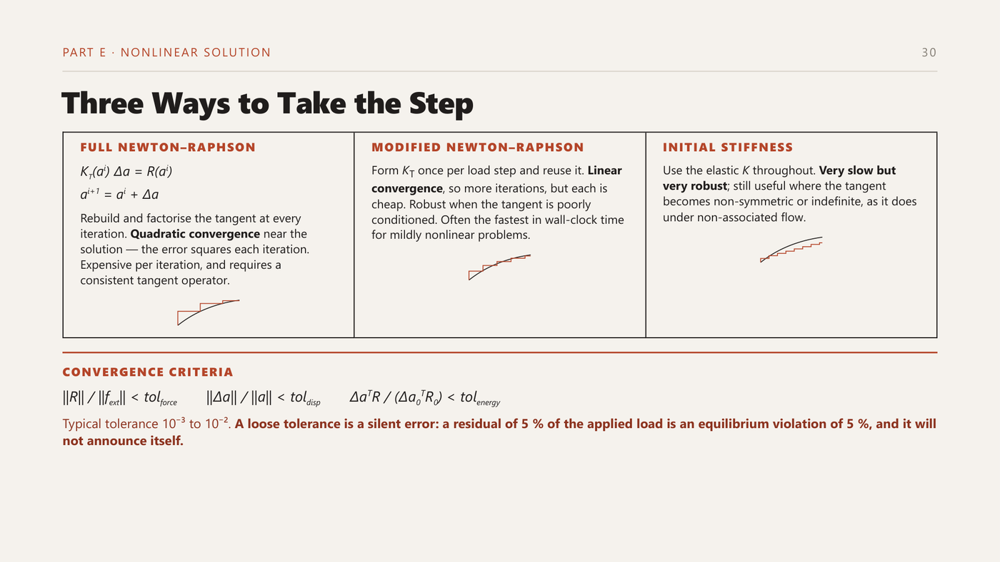
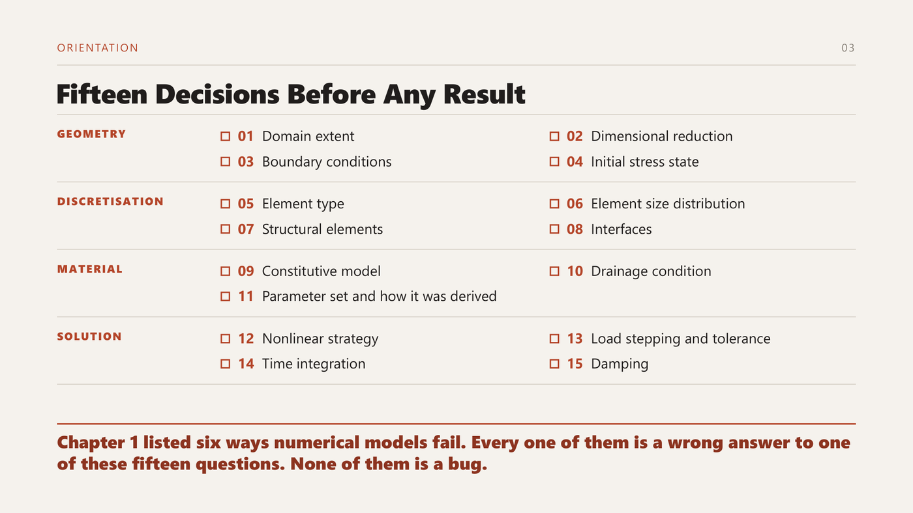

Principle of Numerical Simulation
PLAXIS 一直在處理同一個量：不平衡力。每個施工階段產生的不平衡力被切成許多載重步，每一步反覆迭代到平衡；組成律只在元素內的應力點上計算。
按下 Calculate 之後，PLAXIS 到底在算什麼？Active tasks 視窗上的 ΣMstage、Stiffness、Global error 各代表什麼，算不下去時又該從哪裡找原因？
為什麼大地工程需要數值模擬
土壤與岩體不是簡單材料：勁度隨圍壓與應變改變、行為與應力歷史有關、孔隙水使問題變成耦合問題，層理與節理又讓參數在空間上不均勻。封閉解（Terzaghi 壓密、Boussinesq、Rankine、Prandtl 承載力）必須假設均質土層、常數參數、簡單幾何與一次載重，真實工程四項都不成立。
| 非線性來源 | 出現在方程式哪裡 | 數值上的後果 |
|---|---|---|
| 材料 | 組成矩陣 \(D^{ep}\) 隨應力、塑性應變改變 | 每一步要做應力回傳，勁度要更新 |
| 幾何 | 應變–位移關係出現高次項，積分域隨變形改變 | 需要大變形公式（Updated mesh） |
| 邊界 | 接觸、張開、滑動的狀態事先未知 | 開關型非線性，容易不收斂 |
| 耦合 | 滲透係數、壓縮性隨孔隙比改變 | 壓密方程式變成非線性擴散方程式 |
每一種非線性都讓勁度矩陣依賴尚未求得的解，所以線性問題 \(K\,u=f\) 一次就能解，非線性問題只能反覆迭代求殘差 \(R(u)=0\)。這就是 PLAXIS 計算視窗裡「步」與「迭代」的來源（1.5 節）。
封閉解仍是驗證的基準
數值模型簡化到封閉解成立的情況時，必須重現解析解，例如均質彈性地盤的應力、條形基礎的 \((2+\pi)s_u\)。這叫驗證（verification）。
選方法看主導的物理機制
開挖、路堤、基礎與分階施工用有限元素法（PLAXIS、Abaqus、OpenSees）；顆粒機制用 DEM；極大變形與流動用 MPM。不是看手邊有哪套軟體。
驗證、率定、確認
| 步驟 | 回答的問題 | 怎麼做 |
|---|---|---|
| 驗證 verification | 方程式解對了沒？ | 與解析解比對；做網格與步長加密研究。屬於數學問題 |
| 率定 calibration | 參數對了沒？ | 用組成律模擬元素試驗（三軸、壓密、反覆單剪），調整參數到吻合實測 |
| 確認 validation | 這組方程式適用這個問題嗎？ | 與「獨立的」現地監測或物理模型比對，不能是率定時用過的資料 |
同一組三軸試驗，換一個組成律會率定出不同的數字。MC 的 E′ 是割線勁度、PM4Sand 的 \(G_0\) 是小應變勁度，兩者不能互相套用（第 5、6 章）。
邊界值問題：從強形式到虛功方程
每個大地工程的邊界值問題都由六項組成：平衡、相容、組成律、有效應力原理、流體連續（含 Darcy 定律），以及邊界與初始條件。平衡、相容、組成律與邊界條件每種分析都要用；有效應力原理與流體連續要不要用，取決於下面兩個彼此獨立的選擇。
| 關係 | 式子 | 意義 |
|---|---|---|
| 平衡 | \(L^{T}\sigma + b = 0\) | 應力的空間導數與體積力 \(b\) 平衡 |
| 相容 | \(\varepsilon = L\,u\) | 應變是位移的導數 |
| 組成律 | \(\dot\sigma' = D\,\dot\varepsilon\) | 應力率與應變率的關係；MC、PM4Sand 都在這裡進來 |
| 有效應力 | \(\sigma = \sigma' + m\,p_w\) | PLAXIS 以拉為正，壓應力與孔隙水壓為負 |
排水條件與應力表示是兩件事
- 排水條件（排水／不排水／壓密）：超額孔隙水壓會不會產生、會不會隨時間消散。這是現場條件，由載重時間與排水時間的比值決定。
- 應力表示（有效應力分析／總應力分析）：組成律用 \(\sigma'\) 還是 \(\sigma\) 來寫。這是建模的選擇。
實際能用的組合如下表。排水分析一定是有效應力分析：地下水位以下的穩態水壓仍要靠有效應力原理扣掉，只是沒有超額水壓。不排水分析則兩種表示都可以用，在 PLAXIS 裡就是 Drainage type 的 Undrained (A)、(B)、(C)。
| PLAXIS Drainage type | 排水條件 | 應力表示 | 孔隙水壓 | 勁度／強度參數 | 用到的式子 |
|---|---|---|---|---|---|
| Drained | 排水 | 有效應力 | 只有穩態水壓 | \(E'\)、\(\nu'\)／\(c'\)、\(\varphi'\) | 前三項＋有效應力原理 |
| Undrained (A) | 不排水 | 有效應力 | 穩態＋超額（由體積應變與水的體積模數算出） | \(E'\)、\(\nu'\)／\(c'\)、\(\varphi'\)；\(s_u\) 是輸出 | 前三項＋有效應力原理＋不排水限制 |
| Undrained (B) | 不排水 | 有效應力（勁度） | 穩態＋超額 | \(E'\)、\(\nu'\)／\(s_u\) 直接輸入 | 同上 |
| Undrained (C) | 不排水 | 總應力 | 不分開計算 | \(E_u\)、\(\nu_u \approx 0.495\)／\(s_u\) | 只有前三項 |
| Consolidation（計算類型） | 部分排水，隨時間變化 | 有效應力 | 超額水壓隨時間消散 | 有效參數＋滲透係數 \(k\) | 六項全部 |
所以「不排水」不等於「總應力」：Undrained (A) 是不排水的有效應力分析，可以算出超額孔隙水壓；Undrained (C) 是不排水的總應力分析，算不出水壓，只能得到總應力與變形。
強形式解不出來
強形式要求每一點都平衡，位移要能微分兩次。材料介面（硬層壓在軟層上）位移連續但斜率突變，集中載重使應力奇異，非線性組成律使 \(D\) 依賴未知的應力，所以真實幾何沒有解析解。
弱形式：平均平衡
把平衡式乘上任意容許的虛位移 \(\delta u\) 後積分，再分部積分，得到虛功方程。左邊是內虛功，右邊是體積力與邊界曳力 \(t\) 做的外虛功：
- 對無限多個 \(\delta u\) 都成立，等價於強形式；只對有限個權函數成立，就是有限元素法的近似。
- 位移只剩一次微分，連續性要求由 \(C^1\) 降到 \(C^0\)：層界上的折角變成容許的。
- 代價：整體與節點平衡精確成立，元素內逐點平衡只近似成立。
兩類邊界條件
| 本質（Dirichlet） | 自然（Neumann） | |
|---|---|---|
| 變形問題給定 | 位移 \(u=\bar u\)（固定、滾支） | 曳力 \(\sigma n = \bar t\)（分布載重） |
| 滲流問題給定 | 水頭 | 流量 |
| 什麼都不給時 | — | 變形：\(\bar t = 0\)，即自由表面；滲流：不透水 |
| PLAXIS 設定位置 | Model conditions › Deformations（預設底部全固定、側邊滾支） | Loads、Model conditions › Groundwater flow |
洞室開挖面是 \(\bar t = 0\) 的曳力條件，由弱形式自動滿足。開挖之所以產生變形，是因為原本作用在這個面上的支撐力被移除，變成不平衡力（1.10 節）。
鋼架加載前沒有應力；岩土在動手前已在自重下平衡、帶著完整的應力場。每個應力點的勁度與降伏面位置都由初始應力決定，初始應力錯了，後面每個階段都錯（1.11 節）。
離散化：元素、形狀函數與應力點
元素內的位移由節點位移 \(v\) 內插：\(u = N v\)，應變 \(\varepsilon = B v\)，\(B\) 是形狀函數的導數。代入虛功方程、消去任意的 \(\delta v\)，增量形式寫成：
外力與內力的差 \(f_{ex}-f_{in}\) 就是要靠應力增量去平衡的不平衡力（out-of-balance force）。PLAXIS 的步長控制、收斂判準、ΣMstage 全都圍繞這個量。
最簡單的例子：二節點桿件
長度 \(L\)、斷面積 \(A\)、楊氏模數 \(E\)。線性形狀函數 \(N_1 = 1 - x/L\)、\(N_2 = x/L\)，應變在元素內為常數：
就是大一學過的軸向彈簧 \(EA/L\)。每列和為零：兩節點推相同距離（剛體平移）不產生力。其他元素都是同一個計算，只是節點更多、維度更高、積分要用數值做。
| 符號 | 是什麼 | 由誰決定 |
|---|---|---|
| \(N\) | 形狀函數 | 選元素型式時就決定 |
| \(v\) | 節點位移，整個問題的未知數 | 求解 |
| \(B\) | 形狀函數的導數 | 元素幾何（Jacobian） |
| \(D\) | 組成矩陣 | 材料模型與目前的應力 |
| \(K=\int B^{T}DB\,dV\) | 勁度矩陣，稀疏、組裝而成 | 以 Gauss 點數值積分 |
PLAXIS 的元素

| 元素 | 位移內插 | 應力點（Gauss 點） | 使用時機 |
|---|---|---|---|
| 15 節點三角形 | 四次 | 12 | PLAXIS 2D 預設；應力與破壞載重較準，適合破壞問題與不排水分析 |
| 6 節點三角形 | 二次 | 3 | 計算較快；同樣元素數時精度較低，不排水或破壞問題偏硬 |
光明地下廠房的 plan_e 模型用 15 節點三角形：每個元素 12 個應力點，Output 裡塑性點、張力點的統計都以應力點為單位。同樣 0.5 m 的元素，15 節點三角形的自由度遠多於 OpenSees 的 4 節點一點積分 SSPquad。
答案在應力點，不在等值線圖

- 積分點：組成律在 Gauss 點算出應力（降伏、回傳）。
- 外插：由 Gauss 點外插到元素角點。
- 節點平均：相鄰元素在共用節點的不同值取平均。
- 等值線：在節點值之間內插上色。只有第 1 步是組成律算的。
應力是位移的導數，收斂慢一階：沉陷誤差 1 % 的網格，同一處應力可能差 10 %。看塑性區要回到應力點本身（Output 的 Plastic points），報告應力時讀積分點值，畫等值線時要說明它被平滑過。
總覽：一個 phase 怎麼算完
PLAXIS 的非線性計算分成四層。分析不收斂時，先找出問題卡在哪一層。
| 層次 | 要達成什麼 | 由什麼控制 | 失敗時的訊息或徵兆 |
|---|---|---|---|
| Phase | ΣMstage = 1（Safety 則是跑完指定步數） | Max steps、Arc-length、Max unloading steps | Soil body collapses、Not enough load steps、Load advancement procedure fails |
| Step | 在 Desired min～max 次迭代內收斂 | Desired min／max iterations、Max load fraction per step | 步長一直減半，ΣMstage 幾乎不動 |
| Iteration | Global error ≤ Tolerated error，且不準確塑性點夠少 | Tolerated error、Max iterations、Over-relaxation | Global error 降不下來 |
| 應力點 | 應力落在降伏面上或面內 | 組成律與材料參數 | Inaccurate 塑性點過多、張力點與 apex 點大量出現 |
Step 與 Iteration：整體迭代
勁度事先不知道，所以每一步都要迭代。第 \(i\) 步的第 \(j\) 次迭代：
\(\delta v^{j}\) 是這次迭代的位移修正，累加起來就是這一步的位移增量。迭代時用哪一個 \(K\)，決定了每次迭代的成本與需要的迭代次數：

| 做法 | 勁度矩陣 | 收斂 | 特點 |
|---|---|---|---|
| Full Newton–Raphson | 每次迭代重組、重分解切線勁度 \(K_T\) | 二次：\(10^{-2}\to10^{-4}\to10^{-8}\) | 每次迭代貴；接近破壞時 \(K_T\) 奇異；非關聯流動使 \(K_T\) 不對稱 |
| 修正 Newton–Raphson | 每步組一次 \(K_T\) | 線性 | 輕度非線性時實際耗時常最短 |
| 初始勁度（PLAXIS） | 彈性勁度 \(K=\int B^{T}D^{e}B\,dV\) | 線性，接近破壞時變慢 | 只要材料勁度不增加都穩健，非關聯塑性也一樣 |
PLAXIS 用彈性勁度矩陣迭代
- MC 在彈性範圍內是線性的，勁度矩陣只要在第一步之前組成並分解一次，之後每次迭代只做回代，這是 MC 計算快的原因。
- 彈性勁度比真實的割線勁度硬，每次迭代只解掉部分不平衡力，所以要配合加速技巧減少迭代次數。
| 技巧 | 做法 | 預設 |
|---|---|---|
| Over-relaxation | 刻意把每次的修正量放大，因為用彈性勁度只解掉「目前的不平衡」通常還離平衡很遠 | 1.2（理論上限 2.0；φ 高時要更小） |
| Extrapolation | 同一種載重延續到下一步時，用上一步的位移解當第一次估計 | 適用時自動使用 |
| Arc-length control | 接近破壞時自動調整載重比例，可以越過極限點（1.8 節） | 開啟 |
| Subspace accelerator | 以修正 Newton 為基礎，再用前幾次迭代的位移增量加速；對局部破壞等強非線性最有效 | 子空間大小 3 |
| Line search | 每次迭代自動決定修正量的縮放比例；方向對、但步長衝過頭時有效 | 依版本設定 |
| Gradual error reduction | 容許誤差從 10 倍開始，到 phase 結束時線性降回設定值 | 關閉 |
一個 step 的完整流程
- 形成勁度矩陣 \(K=\int B^{T}D^{e}B\,dV\) 並分解（MC 只做一次）
- 新的一步：外力加上本步增量 \(f_{ex}^{i} = f_{ex}^{i-1} + \Delta f_{ex}\)，即 ΣMstage 增加一段
- 計算內力 \(f_{in} = \int B^{T}\sigma^{i-1}dV\) 與不平衡力；位移增量歸零
- 迭代：解 \(\delta v = K^{-1}(f_{ex}-f_{in})\)，累加位移增量 \(\Delta v\)
- 由位移算應變增量 \(\Delta\varepsilon = B\Delta v\)
- 每個應力點：彈性試算，超出降伏面就回傳（1.6 節）
- 由新應力算內力 \(f_{in}=\int B^{T}\sigma\,dV\) 與新的不平衡力
- 檢查 Global error 與不準確塑性點（1.7 節）；未達標準回到第 4 項
- 收斂：更新總位移、寫出結果；ΣMstage 未到 1 就進入下一步
應力點上的回傳計算
整體迭代給每個應力點一個應變增量 \(\Delta\varepsilon\)，組成律要把它換成應力增量。PLAXIS 採隱式積分（後退 Euler，又稱回傳法 return mapping），塑性應變的方向取在本步終點的應力上：
步驟一：彈性試算
步驟二：塑性修正（只在 \(f(\sigma^{tr})>0\) 時）
\(\langle x\rangle\) 是 McCauley 括號：\(x\le 0\) 時為 0。\(h\) 是硬化參數，MC 為完全塑性，\(h = 0\)。好處是不必先找出「彈性轉塑性」的交點，而且對迭代有利。
MC 的降伏面由六個平面組成，兩面相交處（角點）的法線方向不唯一。PLAXIS 不把角點修圓，而是讓應力回到角點時同時啟用兩個塑性勢函數。加上 tension cut-off 後還會出現受拉角點與 apex 點，這些點的回傳比平面上困難，數量多時迭代會變慢。細節見第 5 章。
局部誤差：回傳結果與平衡應力差多少
迭代中由整體平衡線性化得到的應力 \(\sigma_{eq}\)，和組成律真正回傳出來的應力 \(\sigma_{c}\) 不一定相同。兩者差太多的塑性點記為 Inaccurate（下一節的局部誤差）。同樣的應變增量，不同程式的回傳演算法（例如 OpenSees 在 Lode 角圓化的 MC）可能得到不同的應力，這是兩個程式結果比較時的先天差異之一。
收斂判準
每次迭代後，PLAXIS 同時檢查整體與局部兩類誤差，兩者都低於容許值才算這一步收斂。
整體誤差（Global error）
- Active loads：本階段要加上的載重（本階段與前一階段的差）。開挖時就是停用元素造成的不平衡力。
- Inactive loads：前面各階段已經施加的載重。
- CSP（Current Stiffness Parameter，計算視窗上的 Stiffness）：
全彈性時 CSP = 1，接近破壞時趨近 0，軟化時甚至為負。CSP 越小，分母越小，同樣的不平衡力算出的誤差越大，所以塑性越多，判準反而越嚴。
局部誤差（不準確塑性點）
局部誤差大於 Tolerated error 的塑性點稱為不準確（Inaccurate）塑性點。例如 7259 個塑性點，容許 0.1 × 7259 + 3 ≈ 729 個不準確點，這就是 Active tasks 視窗 Tolerated 欄的數字。介面元素另外計算一組，判準相同。
殘差 5 % 就是 5 % 的平衡違反，程式不會提醒。Tolerated error 設得比 0.01 大，計算會變快，但結果可能根本不平衡；反過來，光明廠房 e6、e7 把 Tolerated error 降到 0.001，是為了確認結果不受容許誤差影響。破壞載重隨位移增加反而意外下降時，常是誤差累積造成的漂移，應以更小的容許誤差重算。下方 1.9 的互動視窗可以直接看到放寬容許誤差造成的不平衡。
自動步長與 Arc-length
步長怎麼調整
| 情況 | 判斷 | 處理 |
|---|---|---|
| 迭代次數 < Desired min（預設 6） | 步長太小 | 下一步載重增量 × 2 |
| 迭代超過 Desired max（預設 15）仍未收斂 | 步長太大 | 這一步載重增量 ÷ 2，重新迭代 |
| 介於兩者之間 | 步長合適 | 下一步沿用這個步長 |
數值控制參數（Numerical control parameters）
| 參數 | 預設 | 作用與調整時機 |
|---|---|---|
| Tolerated error | 0.01 | 整體與局部誤差的容許值 |
| Max steps | Plastic 1000；Safety、Dynamics 100 | Plastic 是上限，通常不會用完；Safety 一定跑滿這個步數 |
| Max iterations | 60 | 單一步的迭代上限。最後一步達到上限時出現 Maximum iterations reached in final step，結果可能不準 |
| Desired min／max iterations | 6／15 | φ 低、曲線不夠平滑時調小；φ 高或高階模型時調大，同時把 Max iterations 提高到 80 |
| Max load fraction per step | 0.5 | 一步最多解掉多少比例的不平衡力。0.5 表示至少分 2 步；設 0.1 表示至少 10 步，可避免塑性區發展時一步跳太大 |
| Over-relaxation factor | 1.2 | 見 1.5 節 |
| Arc-length control | On | Auto 模式在 CSP < 0.5 時才啟用；載重控制的計算應該開啟 |
| Max unloading steps | 5 | 載重連續下降幾步才判定崩塌。破壞機制轉換時載重可能暫時下降，可視情況放大 |
為什麼需要 Arc-length
開啟（預設）
每步載重增量受弧長約束，ΣMstage 可以倒退，用來追出破壞載重。倒退的後果：ΣMstage 連續 Max unloading steps 步減少且 CSP < 0.015 → 判定崩塌（Error 101）。
關閉
回到載重控制，ΣMstage 不能下降。結構其實正在破壞時，計算可能只是一直停在某個 ΣMstage 附近，直到步數用完。這時要看最後一步的變形自己判斷，提高 Max steps 重算沒有用。
互動：載重步與迭代實驗室
把一個 phase 縮成最小的模型：12 根並聯的彈簧，每根代表一個應力點，降伏位移各不相同，所以整體載重–位移曲線會逐漸彎曲、最後到達極限載重 \(P_u\)。下面的程式照 1.5–1.8 節的規則計算：彈性勁度迭代、每個應力點回傳、Global error 判斷收斂、依迭代次數加倍或減半步長、CSP < 0.5 時啟用 Arc-length。數值無因次：總彈性勁度 = 1、極限載重 \(P_u\) = 1。
可以試的幾件事
- Over-relaxation 改成 1.0：彈性區一次修正就平衡（Global error 直接掉到 0），但進入塑性後迭代次數增加。調到 1.8 則每次修正都衝過頭 80 %，連彈性區都要十幾次迭代，步長被迫縮小。
- Max load fraction 改成 0.1：步數變多、每步迭代變少，載重–位移曲線上的點更密，接近極限時步長自動縮小。
- 目標超過 1（極限載重以上）：Arc-length 開時 ΣMstage 停在約 0.87（F₀ = 0.3 時極限對應的值）、CSP 掉到 0、位移一直增加直到步數用完；關閉時步長不斷減半，最後 Load advancement procedure fails。兩者都告訴你「這個載重加不上去」。
- 峰後軟化＋Arc-length：越過峰值後 ΣMstage 開始倒退，連續 Max unloading steps 步下降且 CSP < 0.015，判定崩塌。
- 切線勁度：接近極限時迭代次數明顯減少（二次收斂），但完全塑性的平台上切線勁度為零、矩陣奇異，只能靠減半。這就是 PLAXIS 選用彈性勁度的原因。
分階施工與 ΣMstage
每個 phase 在 Staged construction 模式中定義新的狀態：啟用或停用土體與結構物、改變載重、更換材料、改變水壓。程式比較「本階段結束時應有的狀態」與「上一階段結束時的狀態」，把兩者的差異（不平衡力）分成多個 step 解掉。
停用（開挖）的元素
重量、勁度、強度都不再計入；應力設為零；新產生的邊界自動成為自由、透水邊界。水的條件會保留，模擬乾式開挖要另外修改該區的水條件。
啟用（回填、新建）的元素
勁度與強度從本階段第一步就完全計入；重量也從第一步計入，一開始會有很大的不平衡力，再分步解掉。應力從零開始，新節點先以無應力方式貼合已變形的網格。
ΣMstage 的意義
- 每個 phase 開始時 ΣMstage = 0，成功結束時等於 1.000，表示不平衡力已經全部解掉。
- 可以刻意把目標設成小於 1。例如連續三個 phase 設 0.5、0.5、1.0：第一個結束解掉 50 %，第二個再解掉剩下的 50 %（累計 75 %），第三個累計 100 %。β 法（收斂–圍束法）就用這個做法模擬掌子面的三維拱效應。
- ΣMstage < 1 結束的 phase 仍留有不平衡力，後面一定要接另一個 Staged construction phase；到 1 之前不要做 Safety 等其他類型的計算。
- 沒完成的 phase 實際施加的載重：\(f_{applied} = f_{0} + \Sigma M_{stage}\,(f_{defined}-f_{0})\)。
ΣMstage 沒有到 1：先分辨是哪一種
| 錯誤碼 | 訊息 | 判斷 | 怎麼處理 |
|---|---|---|---|
| 101 | Soil body seems to collapse | 載重連續 Max unloading steps 步下降，且 CSP < 0.015 | 已達崩塌載重，提高 Max steps 重算沒有用；檢查支撐、參數、開挖順序 |
| 102 | Not enough load steps | 用完 Max steps，ΣMstage 仍 < 1 | ΣMstage 仍穩定上升、CSP 不小 → 提高 Max steps 或接一個不改設定的 phase；ΣMstage 停滯、CSP ≈ 0 → 實際上是破壞 |
| 103 | Load advancement procedure fails | 載重加不上去，但 CSP > 0.015，不像真的破壞 | 微調數值控制參數，特別是試著關閉 Arc-length |
實例：光明廠房 plan_e 遇過的情況
| 案例 | 錯誤 | 原因與處理 |
|---|---|---|
| e1，預設迭代參數 | L02 Error 101 | 預設參數（Arc-length 開、每步最多 0.5、unloading 5 步）在第二階就判定崩塌 → 改用放寬參數 |
| e1，放寬參數 | L16 Error 102 | ΣMstage 卡在 0.551、CSP ≈ 0；166 個塑性點中 116 個是張力點。主廠房左拱肩少數元素全進張力截斷、勁度為零，位移發散到 8×10¹² m，3000 步用完。不是整體崩塌，是開挖面幾個元素失去勁度 → e4 加密洞周網格、修正拱腳近點 |
| Numerical control parameters | 預設 | plan_e 放寬參數 | 為什麼 |
|---|---|---|---|
| Use default iter. parameters | True | False | 要自訂下列各項 |
| Max steps | 1000 | 3000 | 步長變小後需要更多步 |
| Max unloading steps | 5 | 20 | 破壞機制轉換時容許載重暫時下降 |
| Max load fraction per step | 0.5 | 0.1 | 塑性區發展時步長不會一次跳太大 |
| Arc-length control | On | Off | ΣMstage 不能倒退，避免被判定崩塌；代價是要自己檢查 |u| 過大的節點 |
少數元素位移發散到數公尺甚至 10³ m 時，計算仍可能判定收斂。每個階段算完都要檢查 |u| 異常大的節點（第 4 章用 Python 一次掃過所有階段）。
Deconfinement 與 ΣMstage < 1
| ΣMstage < 1 | Deconfinement | |
|---|---|---|
| 設定位置 | Phase 的 Loading 參數 | 在 Staged construction 中逐一設定每個土體，輸入釋放百分比 |
| 作用對象 | 整個 phase 的總應力變化，有效應力與孔隙水壓同等影響 | 只影響有效應力變化，不影響水壓 |
| 多洞室 | 所有變化共用一個比例 | 每個開挖段可以用不同的釋放比例 |
初始應力
土層在施工前已經在自重下平衡。初始應力決定每個應力點的勁度與距離降伏面多遠，錯了後面每個階段都跟著錯。Initial phase 有三種計算類型：
| 方法 | 做法 | 適用 | 注意 |
|---|---|---|---|
| K0 procedure | \(\sigma'_v\) = 上覆重量；\(\sigma'_h = K_0\,\sigma'_v\)。不檢查平衡 | 地表、土層與水位都水平 | 不產生剪應力，地表傾斜時會有不平衡力；K0 使應力超出降伏面時，程式自動降低水平應力並產生塑性點 |
| Gravity loading | 以 Plastic 計算施加自重（ΣMweight 0 → 1） | 地表傾斜、地層不水平 | 彈性側向拘束下 \(K_0=\nu/(1-\nu)\)：ν = 0.3 只得到 0.43，很難得到 K0 > 1；要目標 K0 可先取 \(\nu = K_0/(1+K_0)\) |
| Field stress | 直接指定三個主應力與主方向，全模型均勻應力 | 深層岩體、主應力有旋轉 | 不考慮應力隨深度增加；四邊界都要全固定；之後要接 nil-phase |
- Plastic nil-phase：一個不加任何載重的 Plastic phase，用來解掉 K0 procedure 留下的少量不平衡或塑性點。
- Reset displacements to zero：初始應力產生的位移沒有物理意義，下一個 phase 要勾選，讓位移從零開始累計，應力不受影響。K0 procedure 直接給定應力、沒有位移，所以接在它後面的第一階不必勾。
- 無凝聚性材料要避免初始應力就降伏，K0 必須介於 \(\dfrac{1-\sin\varphi}{1+\sin\varphi}\) 與 \(\dfrac{1+\sin\varphi}{1-\sin\varphi}\) 之間。
地表水平，Initial phase 用 K0 procedure，材料 Initial 頁改成 Manual：面內 \(K_{0,x}\) = 0.485、出平面 \(K_{0,z} = \nu(1+K_{0,x})\) = 0.3564（與 OpenSees 平面應變的 \(\sigma_z=\nu(\sigma_x+\sigma_y)\) 相同）。算完先檢查 Ph0：\(\sigma_v = \gamma\,z\)、\(\sigma_h = K_0\,\sigma_v\)，且沒有塑性點。
Safety：強度折減
Safety 計算回答「目前這個狀態下，強度還能打幾折才會破壞」。載重、幾何與勁度都不變，只用同一個係數 ΣMsf 逐步折減強度：
- tanφ、c 與抗拉強度同時折減；ψ 原則上不折減，但 φ 降到等於 ψ 後跟著一起降。
- Safety 會跑滿 Max steps（預設 100），最後一定要用 Curves 確認 ΣMsf 出現平台，沒有平台就加大步數重算。
- 要開 Arc-length、容許誤差不超過 0.01。沒有 Arc-length 時 ΣMsf 不能下降，可能高估安全係數。
- Safety phase 的位移沒有物理意義，建議勾選 Reset displacements to zero，也不要拿它接後續施工階段。
強度折減找到的是「強度下降時最先破壞的機制」，不一定等於「載重增加時最先破壞的機制」，兩者的安全係數可能不同，報告要寫明用的是哪一種。進階模型在 Safety 中會退化成 MC 行為；Hoek-Brown 材料有自己的折減公式。
讀懂 Active tasks 視窗
計算時跳出的 Active tasks 視窗分成幾區。以下逐欄說明，最後用一個實際停滯的 phase 當例子。
Total multipliers at the end of previous loading step
| 欄位 | 意義 |
|---|---|
| ΣMdispX、ΣMdispY | 指定位移在本階段已施加的比例 |
| ΣMweight | 材料重量已施加的比例；1.000 表示自重已全部施加 |
| ΣMaccel | 擬靜態加速度乘數，一般為 0 |
| ΣMsf | 強度折減係數，只在 Safety 中變化，其他計算為 1.000 |
| ΣMstage | Plastic 計算的完成比例：開始為 0，成功時為 1.000；Consolidation 與 Safety 時固定為 0 |
| Pexcess,max | 最大超額孔隙水壓；排水分析為 0 |
| ΣMarea | 目前啟用的土體面積占全部土體面積的比例；開挖後小於 1 |
| Fx、Fy | 非零指定位移處的反力 |
| Stiffness | 即 CSP：全彈性為 1，接近破壞時趨近 0 |
| Time、Dyn. time | 壓密或動力分析的時間 |
Calculation progress
第一個曲線點（curve point）的簡易曲線。Plastic 計算畫 ΣMstage 對位移，Safety 畫 ΣMsf 對位移。計算前在 Output 選好曲線點（第 2 章），這張圖才有意義。
Iteration process of current step
| 欄位 | 意義 |
|---|---|
| Current step／Max. step | 目前的步數／Max steps 上限 |
| Iteration／Max. iterations | 這一步目前的迭代次數／單步迭代上限 |
| Global error／Tolerance | 整體平衡誤差／容許值。Global error 大於 Tolerance 時一定會繼續迭代 |
| Element | 本階段啟用的土體元素數 |
| Decomposition | 勁度矩陣分解的進度 |
Plastic points in current step
| 欄位 | 意義 |
|---|---|
| Plastic stress points | 土體元素中處於塑性狀態的應力點數 |
| Plastic interface points | 介面元素中的塑性點數 |
| Inaccurate／Tolerated | 局部誤差超過容許值的塑性點數／容許上限（0.1 × 塑性點數 + 3） |
| Tension points | 觸發 tension cut-off 的點（受拉破壞） |
| Cap/Hard points | HS、Soft Soil 等硬化模型的帽蓋點與硬化點；MC 不會出現 |
| Apex points | 容許剪應力為零的特殊塑性點；數量多時迭代變慢 |
按 Preview 可以在計算中途查看中間步的結果，找出變形集中的位置。
範例：一個停滯的 phase
L14 開挖階段，ΣMstage = 0.5434、Stiffness ≈ 0（−0.07×10⁻¹⁵）、Current step 539／3000、Iteration 9／60、Global error 0.01317／0.01、Plastic stress points 7259、Inaccurate 98／Tolerated 729、Tension points 1555；Calculation progress 曲線的 ΣMstage 停在約 0.55，橫軸位移卻已到 4×10¹¹。
| 觀察 | 解讀 |
|---|---|
| ΣMstage 停在 0.54 好幾百步 | 這個階段的不平衡力只解掉約 54 %，剩下的加不上去 |
| Stiffness ≈ 0 | 整體勁度已經耗盡，接近或已經破壞（1.9 互動視窗「目標超過 1」的情境就是這個樣子） |
| 位移達 4×10¹¹ | 不是真實位移，是數值上形成了機構 |
| Inaccurate 98 < Tolerated 729 | 局部誤差沒有問題，卡住的是整體平衡 |
| Tension points 1555 | 大範圍受拉破壞，要看分布位置 |
下一步：按 Preview 找變形集中處；確認前一階段 ΣMstage 已到 1；確認本階段該啟用的支撐都已啟用；必要時對前一個成功的階段做 Safety，看它距離極限多遠。
其他結束訊息
| 訊息 | 意義與處理 |
|---|---|
| Numerical error | 多半是輸入錯誤，檢查輸入資料、網格與 phase 設定 |
| Severe divergence | 整體誤差持續增加到極大值；壓密時時間步太小也會發生，或已接近破壞 |
| Maximum iterations reached in final step | 最後一步迭代到上限仍未收斂，結果可能不準，常代表輸入有誤 |
| 矩陣接近奇異（nearly singular） | 常是邊界條件不足，有元素「漂浮」 |
建立有意義的模型
同一個開挖問題，計算域太小、網格太粗、恰當的三個模型都跑得完、都收斂、都沒有錯誤訊息，但只有第三個站得住腳。得到結果之前有十五個決策，每一個都有站得住腳與站不住腳的答案，計算本身分不出來。

計算域與邊界
- 邊界太近會加入地盤沒有的勁度，靜力分析中沉陷、變位與破壞載重的誤差是單向的：域太小看起來比較安全。結構內力與孔隙水壓的方向沒有保證。
- 先選定要報告的關注量（最大壁體變位、拱頂沉陷、破壞載重），把範圍加倍後答案只變 1 %，才算夠大。光明廠房 plan4a 以「左右底邊界 1 % 無應力殘餘」決定範圍，就是這個做法。
- 底部邊界直接束制垂直位移，深度通常比寬度敏感。
網格
| 量 | 網格加密時的走向 | 可否直接報告 |
|---|---|---|
| 載重方向的位移 | 由下往上單調逼近 | 可以 |
| 一般位置的應力 | 可能在答案附近振盪 | 小心，回到積分點值再看 |
| 奇異點（凹角）的峰值應力 | 持續上升，永不收斂 | 不可，改報合力、彎矩 |
| 破壞載重 | 由上往下遞減 | 可以，三組網格外插 |
| 軟化材料的峰值載重 | 隨網格無限下降 | 不可，要先正則化 |
三組網格（元素尺寸比 \(r\approx 2\)）得到關注量 \(\varphi_3\)（粗）、\(\varphi_2\)、\(\varphi_1\)（細），可以估計收斂階數與外插值：
例：破壞載重粗 6.10、中 5.55、細 5.35 \(s_u\)，\(p\) ≈ 1.46，外插 5.24 \(s_u\)，細網格剩餘誤差約 2 %；Prandtl 解 5.14 \(s_u\) 更低，符合「由上往下逼近」。光明廠房 e4（洞周 0.5 m）與 e7（加密區內 2.5 m）就是這種網格比較。
三維簡化為二維
- 平面應變限制出平面應變，所以 \(\sigma_z\) 不為零；平面應力在大地工程幾乎用不到；軸對稱不能受側向力。
- 支撐、地錨、岩栓、樁在平面應變中代表「每延公尺」，勁度、預力、抗拉拔都要除以出平面間距 \(L_s\)，忘記除就高估 \(L_s\) 倍。
- 報告要寫出採用二維的理由、預期偏差的大小與方向。
排水條件與求解器
- 排水與否看載重時間與排水時間的比值 \(T = c_v t/H_{dr}^2\)，不是看土壤種類。有效應力不排水分析中 \(s_u\) 是輸出，不是輸入。
- 求解器的四個無聲錯誤：容許誤差太鬆、載重控制停在極限點前、時間步太大、阻尼重複計算。它們都會算完、都會收斂，但答案錯。
六種常見失敗與檢查
| 失敗模式 | 檢查方法 |
|---|---|
| 組成律選錯（開挖用線彈性、反覆載重用 MC） | 列出問題中的應力路徑，確認組成律能描述（第 5、6 章） |
| 參數未率定 | 用元素試驗模擬重現實測曲線 |
| 排水假設錯 | 先算時間因數 \(T\) |
| 邊界條件錯、計算域太小 | 加大計算域，結果改變 < 數 % 才算夠大 |
| 未檢查網格、步長 | 三組網格、兩組容許誤差比較 |
| 相信彩色圖 | 與封閉解、經驗值做量級檢查；回到積分點數值 |
第 2 章把這些決策落實到 PLAXIS：分析域、材料、幾何、網格、相位與計算參數，每一步都對照 GUI 與 Command 指令。